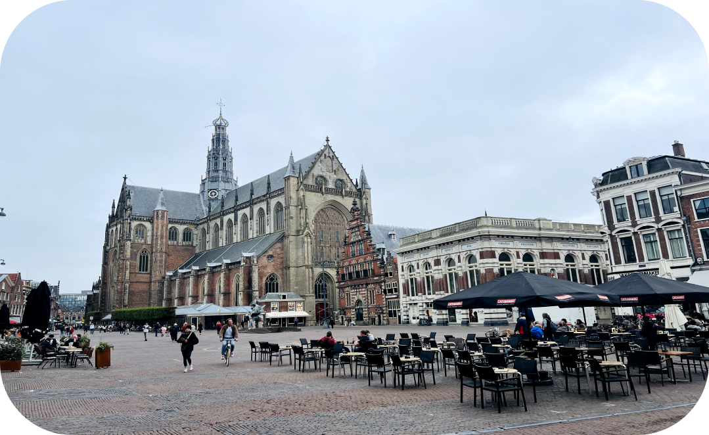

Providing information and assistance for students and workers moving to Haarlem
Your guide before Moving to Haarlem
Haarlem is a charming Dutch city that boasts a vibrant population of 150,000 and an abundance of historic locations and attractions, making it one of the most attractive old cities in the Netherlands. It is the capital of Noord-Holland and the second-largest city within the Amsterdam Metropolitan Area, yet it retains a pleasantly compact size.
Netherlands
North Holland
Haarlem
Moving to a new country can be overwhelming. We’ve got you covered! We’ll provide you with all the information you need to know before you arrive in Haarlem.
Arriving to Haarlem
Don’t worry if you didn’t find a spot where to stay there are options.
Accomodations in Haarlem
Finding rent in Haarelem or any other dutch city isn’t that easy. But don’t worry we are here to help!
Explore Haarlem
Haarlem is a rich city with alot of exiting things and activities to do. wanna find some?...